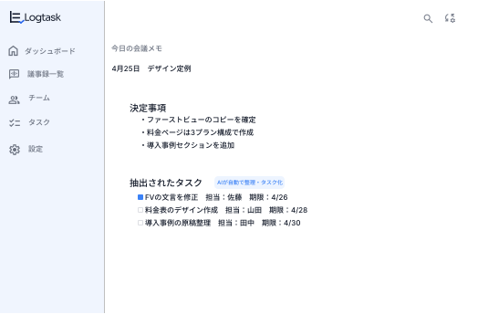
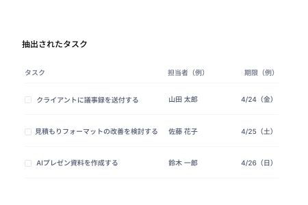
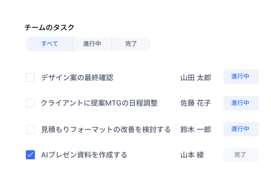

1
アカウント作成
Googleアカウントまたは
メールアドレスで簡単登録。
会議をするだけで、AIが内容を整理し、
タスク化・共有まで自動で行います。

抽出されたタスク
デザイン案の最終確認
4/24(金)
クライアントに提案MTGの日程調整
4/25(土)
見積もりフォーマットの改善
4/26(日)
AIプレゼン資料を作成する
4/28(火)
3ステップで、すぐにLogtaskを利用できます。
アカウント作成
Googleアカウントまたは
メールアドレスで簡単登録。
会議をアップロード
または録音
Zoom連携やファイルアップロード、
その場での録音も可能です。
AIが自動でタスク化
AIが解析・要約し、タスクを自動で作成。
あとはチームで共有するだけ。
STEP 01
オンライン・オフライン問わず、会議を録音。
AIが話者を識別し、正確に文字起こしします。


STEP 02
AIが会議の流れを解析し、重要ポイントや決定事項を自動で要約。 長い会議でも、素早く内容を把握できます。
STEP 03
AIが会話の中から「やるべきこと」を自動で抽出。 担当者や期限の候補もAIが提案するので、抜け漏れなくタスク化できます。


STEP 04
抽出したタスクはそのままチームに共有。 ステータス管理やコメント機能で進捗を可視化し、確実に実行までつなげます。
Googleアカウントまたは
メールアドレスで簡単登録。
Zoom連携やファイルアップロード、
その場での録音も可能です。
AIが解析・要約し、タスクを自動で作成。
あとはチームで共有するだけ。
Zoom録画やファイルアップロード、
その場での録音も可能です。
AIが解析・要約し、タスクを自動で作成。
あとはチームで共有するだけ。
まずは無料で、
会議からタスク化を体験してください。